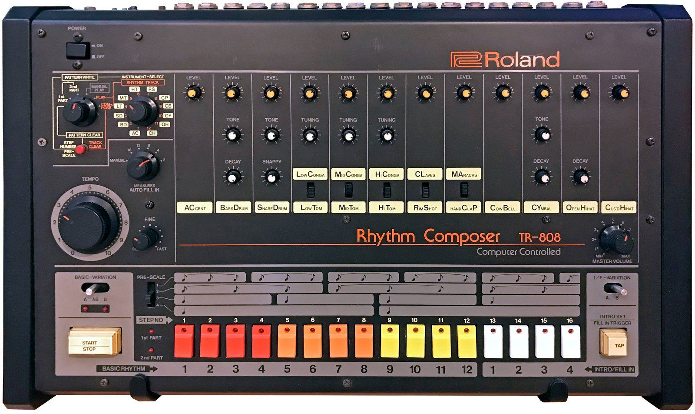

斯德哥尔摩 · 录音室
瑞典斯德哥尔摩有一间叫 Cheiron 的录音室。一位二十多岁的瑞典词曲作者在这里写了一首歌，原本想给美国的 R&B 女子组合 TLC，对方没有要。
这首歌后来交给了一个十六岁的美国女孩。1998 年秋天，单曲发行；第二年初，它登上了美国单曲榜第一名。歌叫《…Baby One More Time》，女孩叫 Britney Spears，写歌的人叫 Max Martin。
此后二十多年里，Max Martin 作为词曲作者写出了约三十首美国榜首单曲。大多数听众从没见过他的样子。
前面的章节里，我们听的大多是“乐队”：几个人组在一起，写自己的歌，在台上弹自己的乐器。当代流行音乐常常不是这样。一首热门歌背后，可能有一个词曲作者团队、一个或几个制作人、一位人声制作、一位混音师，最后才是你看到的那位歌手。
这不意味着流行歌“假”。它更像一部电影：有导演、编剧、摄影和演员，每个环节都有很高的手艺。这一章就当一回“幕后”：拆它的结构、和弦、制作、节奏，然后去看全世界和华语世界的流行，最后看看手机和短视频怎样改变了一首歌的样子。
01 · what流行是什么
“流行音乐”（pop music）的字面意思就是“受欢迎的音乐”。所以它和前面的类型不一样，它不是靠某种声音定义的，而是靠“在某个时代，最多的人在听什么”来定义的。1960 年代的流行是披头士，1970 年代末是迪斯科，1980 年代是 MTV 上的 Michael Jackson 和 Madonna，2010 年代是电子舞曲和嘻哈。
这一章说的“当代流行”，大致指 1980 年代以后、特别是进入数字时代以后的流行音乐。它有几个共同点：
- 什么都吸收：流行像一块海绵，哪种声音火了，它就把哪种声音吸进来：迪斯科、嘻哈、电子舞曲、拉丁、韩国、非洲……
- 以歌和歌手为中心：观众记住的是旋律和歌手，而不是乐队里的吉他手
- 精细分工：写节奏和伴奏的人、写旋律和歌词的人、唱的人、做混音的人，往往不是同一个人
- 在电脑里完成：大多数声音不是在房间里一起演奏出来的，而是在电脑里一轨一轨拼起来的
- 为“抓住你”而设计：每一秒都在想办法让你别切歌
图里的“写旋律和歌词”有一个行业里的专门叫法：topline。先由制作人做好一段伴奏（beat 或 track），再请擅长写旋律的词曲作者在上面“写一条线”，这种“伴奏先行”的写法今天非常普遍。和民歌那章的“一个人一把吉他写一首歌”比，几乎是倒过来的。
02 · hook钩子与结构
流行音乐最重要的概念是钩子（hook）：一首歌里最抓耳、最让人记住的那一小段。它可以是一句旋律、一句歌词（常常就是歌名）、一个节奏，甚至只是一个特别的声音。好的钩子听一遍就会在脑子里转一整天。
当代流行歌的结构大致是这样的：
- 前奏（intro）：越来越短，有时干脆没有
- 主歌（verse）：讲故事，旋律相对平
- 导歌（pre-chorus）：一段“助跑”，和弦和旋律慢慢往上推，制造期待
- 副歌（chorus）：钩子所在的地方，最高、最满、最好记
- 后副歌（post-chorus）：副歌之后再来一个短钩子，常常只是几个音节或一段切碎的人声
- 桥段（bridge）：在最后一次副歌前换个方向，让耳朵休息一下
按图 2 的顺序浓缩成一段：主歌、导歌、副歌、后副歌、桥段，再来一次副歌。上面的六个格子依次亮起：主歌、导歌、副歌、后副歌、桥段、副歌。注意导歌怎样“往上推”，以及后副歌那个只有一个音节的小钩子。
旋律四处游走，每一句都不一样。
一个短小的动机反复出现，最后一次稍微变化。
听完以后试着哼一下：哪一个你能哼出来？“重复，加一点点变化”，是写钩子最基本的办法。
03 · chords四个和弦就够了
布鲁斯那章说过，十二小节布鲁斯只用三个和弦。当代流行更“省”：大量热门歌整首歌只循环四个和弦。最常见的一组是 I – V – vi – IV，在 C 大调里就是 C – G – Am – F。2009 年，澳大利亚的喜剧乐队 Axis of Awesome 用这四个和弦一口气串唱了几十首热门歌，让很多人第一次意识到这件事。
这四个和弦还可以从不同的位置开始循环：从 vi 开始（Am – F – C – G）听起来就更忧伤一些。和弦一样，旋律、节奏和音色不同，就是不同的歌，这正是流行歌的写法：和弦是地基，钩子才是房子。
快速、明亮，四拍底鼓。
慢速钢琴，长音旋律。
Am – F – C – G：忧伤的版本。
卡农进行：华语抒情歌的老朋友
巴洛克那章讲过帕赫贝尔的《D 大调卡农》。它的八个和弦 I – V – vi – iii – IV – I – IV – V 后来被称为卡农进行，特点是低音一步一步往下走，像下楼梯。这组和弦在华语抒情歌里出现得非常多，很多人觉得“很熟悉”，往往就是因为它。日本流行音乐里也有一组特别常用的和弦，叫“王道进行”（IV – V – iii – vi）。
注意钢琴的左手：每个和弦换一次低音，一步一步往下走。上面的旋律是原创的，你可能会觉得“好像在哪儿听过”，这就是卡农进行的魔力。
04 · production歌是“做”出来的
今天的流行歌几乎都是在数字音频工作站（DAW）里完成的：一台电脑，一个软件，几十甚至上百条音轨。鼓可能是采样，贝斯可能是合成器，人声可能是同一句唱了十遍再拼出最好的片段。“制作人”在流行音乐里的地位，常常和歌手一样重要。这里介绍三件最有代表性的“制作工具”。
Auto-Tune：从修音器到乐器
Auto-Tune 是一款自动修正人声音高的软件，1997 年由美国工程师 Andy Hildebrand 推出。他原本在石油行业用信号处理分析地震波数据。它的本意是悄悄地把唱偏的音拉回来；但如果把“修正速度”调到最快，音和音之间的滑动就消失了，人声会像机器人一样一格一格地跳。1998 年 Cher 的《Believe》第一次让这种声音成为热门单曲的卖点，后来的 R&B 和嘻哈歌手又把它变成了一种标志性音色。
滑进滑出，带颤音。
音高一格一格地跳。
和弦长音一直铺着。
每次底鼓一响，和弦就“让路”，整段在呼吸。
侧链压缩：会呼吸的音乐
在电子舞曲和流行里，经常听到整首歌像在“一吸一呼”：每次底鼓一响，别的声音就突然变小，然后再慢慢涨回来。这是侧链压缩（sidechain compression）：让底鼓去“控制”别的音轨的音量。它本来是为了让底鼓更清楚，后来法国浩室（French house）等电子乐把这种“泵动感”夸张成了一种风格。
808：一台“失败”的鼓机
Roland TR-808 是日本罗兰公司 1980 年推出的鼓机。它的鼓声是用电路合成的，一点也不像真鼓，当时卖得并不好，很快停产。但二手价格便宜，被早期嘻哈和电子乐手大量使用。它的底鼓可以拉得很长、很低，后来人们干脆把这种又长又低、还能像贝斯一样弹出音高和滑音的声音直接叫作“808”。今天的嘻哈和流行，几乎离不开它。

05 · beats节奏的地图：迪斯科、trap、雷鬼动
当代流行的“节奏”大多不是自己发明的，而是从某一种舞曲或嘻哈里借来的。认出这几种节奏，就能听出一首流行歌的“血统”。
- 四拍底鼓（four-on-the-floor）：每一拍都有一下底鼓，“咚、咚、咚、咚”。来自 1970 年代的迪斯科，后来是浩室和电子舞曲的基础。它让人想跳舞
- Trap：来自美国南方亚特兰大的嘻哈。速度快但感觉“半速”，军鼓只在第三拍；踩镲会突然打出一串极快的连音（hi-hat roll）；低音交给长长的 808
- 雷鬼动（reggaeton）的 dembow 节奏：来自牙买加的舞厅雷鬼（dancehall）和波多黎各，“咚——嚓—咚嚓”，3 + 3 + 2 的切分。2017 年的《Despacito》让它席卷全球
迪斯科、浩室、电子流行。
半速的军鼓、碎碎的踩镲、滑动的 808。
“咚——嚓—咚嚓”的 dembow。
06 · global全世界的流行
很长时间里，“全球流行”几乎等于“英语流行”。进入 YouTube 和流媒体时代后，这件事变了。
- 韩国流行（K-pop）：大经纪公司从少年时期开始选拔和训练“练习生”，几年后以组合出道，唱、跳、造型、视频和粉丝运营都经过精心设计。2012 年 PSY 的《江南 Style》成为第一个播放量突破十亿次的 YouTube 视频；2020 年 BTS 的《Dynamite》成为第一首登上美国单曲榜第一的全韩国人组合的歌。K-pop 歌曲有一个很有辨识度的习惯：一首歌里常常突然换一种风格，从电子舞曲跳到抒情再跳到说唱
- 拉丁流行：2017 年，波多黎各歌手 Luis Fonsi 和 Daddy Yankee 的西班牙语歌《Despacito》在美国单曲榜连续 16 周第一，追平了当时的纪录。此后，西班牙语歌曲成了全球流媒体榜单的常客
- 非洲节奏（Afrobeats）：来自尼日利亚、加纳的流行音乐，轻快的切分节奏和温暖的和声，2010 年代后期起进入欧美主流
- 日本 city pop：1980 年代的日本都市流行，四十年后因为 YouTube 的推荐算法在全世界重新走红。这说明算法不只推新歌，也会“挖出”旧歌
先是带四拍底鼓的电子舞曲段落，然后突然切到一段 trap 节奏的“说唱段”，最后进入一段只有鼓和贝斯的“舞蹈间奏”（dance break）。三个格子标出三个段落。
07 · chinese华语流行
华语流行音乐有自己的一条长线，大致可以这样梳理：
- 1970–80 年代 · 邓丽君：台湾歌手邓丽君甜美、轻柔的唱法风靡整个华语世界。1980 年代初，她的歌通过磁带传进中国大陆，当时流传着“白天听老邓，晚上听小邓”的说法
- 1980 年代 · 校园民歌与罗大佑：台湾的“校园民歌”运动之后，罗大佑把社会观察写进流行歌，让流行歌不只谈情说爱
- 1990 年代 · 香港“四大天王”：张学友、刘德华、黎明、郭富城代表了粤语流行的巅峰，香港的唱片工业影响了整个亚洲
- 2000 年代 · 周杰伦与“中国风”：周杰伦 2000 年发行首张专辑，把 R&B、嘻哈和中国五声音阶、古典意象混在一起。2003 年和作词人方文山合作的《东风破》常被看作“中国风”流行歌的标志
- 2000 年代中后期 · 选秀与网络：电视选秀节目和网络歌曲让“谁能成为歌手”这件事变得前所未有地开放
- 2020 年代 · 短视频：一首歌能不能火，越来越取决于它的某十五秒能不能在短视频平台上被反复使用
底下是 R&B 式的慢节奏鼓、钢琴和贝斯，上面是一条只用五声音阶（宫商角徵羽）的原创旋律，用一个类似古筝的拨弦音色弹出，并加了一些滑音。这种“西方的节奏 + 东方的旋律”，就是中国风流行歌最基本的配方。
08 · stream流媒体与短视频
在唱片时代，你花钱买了一张专辑，会从头听到尾。流媒体时代，跳过一首歌不花一分钱。这改变了歌曲本身。
2017 年，美国俄亥俄州立大学的音乐理论博士生 Hubert Léveillé Gauvin 发表了一项研究：他统计了 1986 年到 2015 年每年美国排行榜前十名的歌，发现歌手开口之前的前奏，平均从 1980 年代中期的二十多秒缩短到了 2015 年的 5 秒左右；歌曲也变得更快，歌名更早出现在歌词里。他认为这是一种“注意力经济”：如果不能马上抓住听众，听众就会切歌。
短视频平台又把这个趋势推进了一步：一首歌最重要的可能不是整首，而是某十五秒，适合跳舞、对口型或配一个梗。一些老歌因此突然翻红；歌手和唱片公司也会专门发行加速版（sped up）：把整首歌加快、音调升高，听起来更轻快、更“上头”。
先是一段长长的前奏，十几秒后歌手才开口。
第一秒就是人声和钩子。
正常速度的副歌。
同一段，快了约 20%，音调也一起变高。
这些变化有人欢迎，有人担心。但流行音乐一直是这样：它总是最先适应新的媒介。唱片决定了一首歌大约三分钟（一面 78 转唱片只能装下这么多），MTV 让视频和形象变得和声音一样重要，流媒体和短视频则在重新决定一首歌的长度和开头。
09 · listen听：本章十二首曲目
按时间排成一份歌单。A 面从邓丽君到“中国风”，B 面是 YouTube 和流媒体时代的全球热门。每首都提供 YouTube、网易云和 QQ 音乐的搜索链接。
10 · practice练 · 术语表
练习 1：画结构图
选《…Baby One More Time》或《Blinding Lights》，边听边写下段落：前奏、主歌、导歌、副歌……再和图 2 比较。
练习 2：找钩子
听《bad guy》，你觉得它最抓耳的钩子是一句旋律、一句歌词，还是一个声音？
练习 3：听出 Auto-Tune
听《Believe》的主歌，找到人声“一格一格跳”的地方。对照 Lab 05。
练习 4：认节奏
分别听《Blinding Lights》《Despacito》和任意一首 trap 风格的歌，对照图 7，判断它们各用了哪种节奏。
练习 5：数前奏
听《月亮代表我的心》和《光年之外》，各数一数：从开始到人声出现，用了多少秒？
术语表
- 流行音乐
- 在某个时代最多人听的音乐，不由某一种声音定义
- 制作人
- 负责一首歌整体声音、编曲和录制过程的人
- topline
- 在已有伴奏上写的主旋律和歌词
- 钩子
- hook，一首歌里最抓耳、最好记的部分
- 导歌
- pre-chorus，主歌和副歌之间的“助跑”段
- 后副歌
- post-chorus，副歌之后的短钩子
- 四和弦
- I – V – vi – IV 及其轮换，大量流行歌的和弦循环
- 卡农进行
- 来自帕赫贝尔《卡农》的八和弦进行，低音逐级下行
- 王道进行
- 日本流行音乐常用的 IV – V – iii – vi 和弦进行
- DAW
- 数字音频工作站，用电脑录音、编辑、混音的软件
- Auto-Tune
- 自动修正音高的软件，极端设置下产生机器人般的人声
- 侧链压缩
- 让底鼓控制其他音轨音量、产生“呼吸”感的技术
- 808
- 罗兰 TR-808 鼓机，也指它那种长而低、有音高的底鼓
- 四拍底鼓
- 每拍一下底鼓的舞曲节奏
- trap
- 来自美国南方嘻哈的节奏风格：半速军鼓、碎踩镲、808
- 雷鬼动
- reggaeton，以 dembow 节奏为基础的拉丁流行
- 练习生
- K-pop 经纪公司培养的待出道艺人
- 中国风
- 结合五声音阶、古典意象与 R&B、嘻哈的华语流行
- 注意力经济
- 注意力稀缺时，作品必须尽快抓住受众的现象
- 加速版
- sped up，整首歌加快并升调的版本